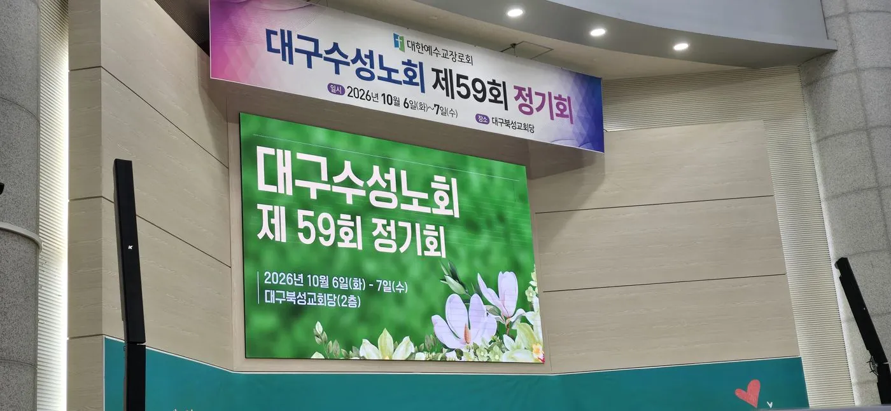
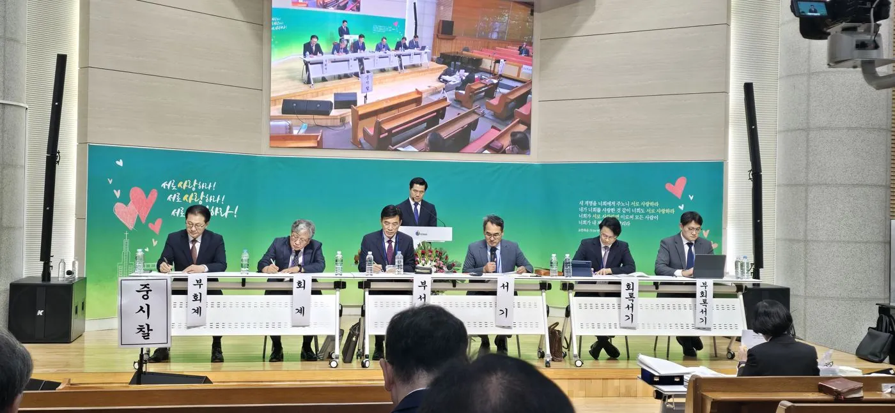
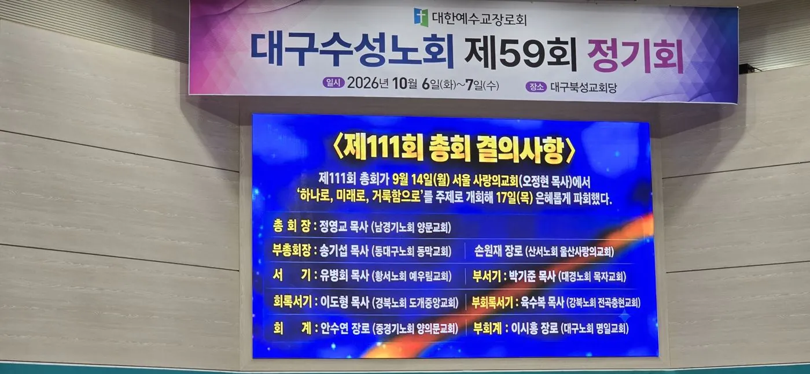
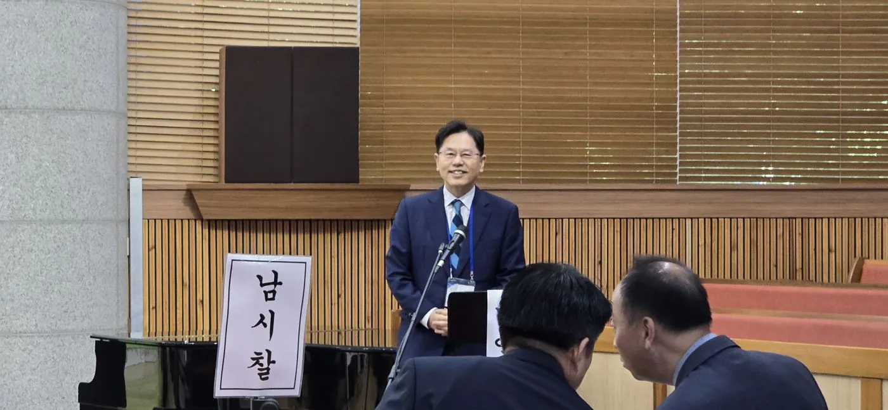
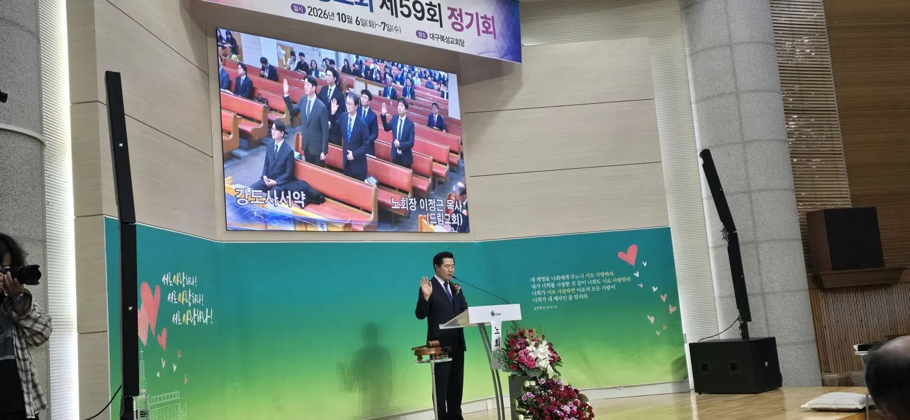
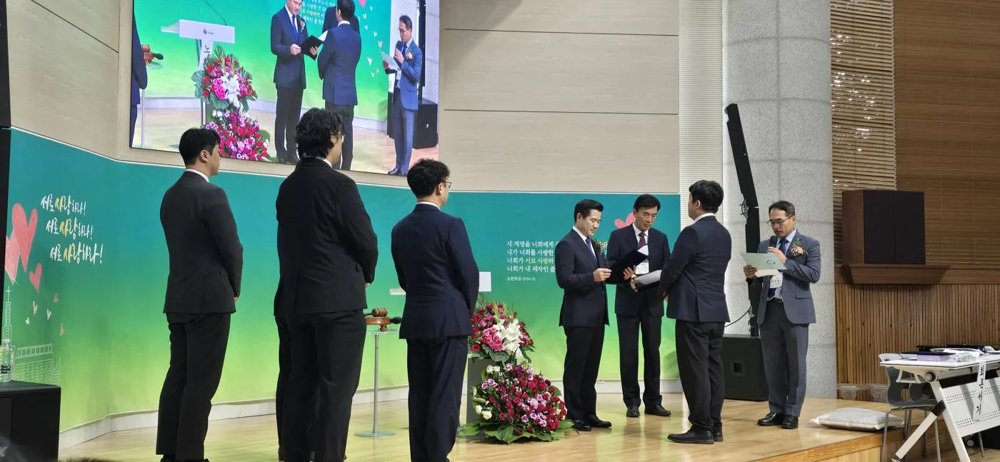
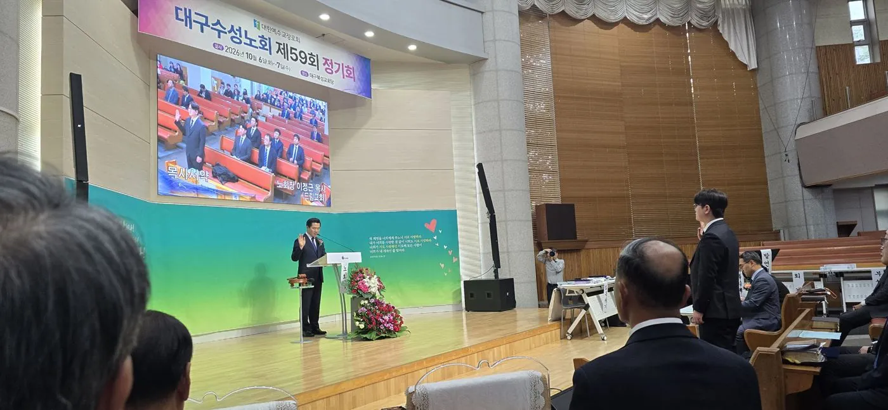
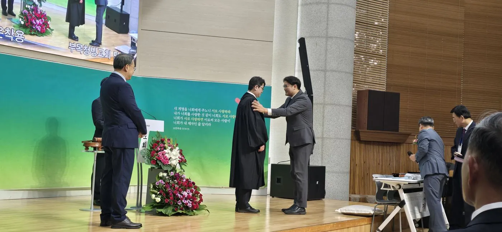
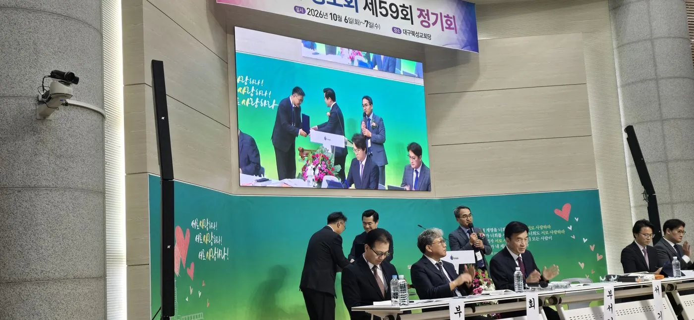
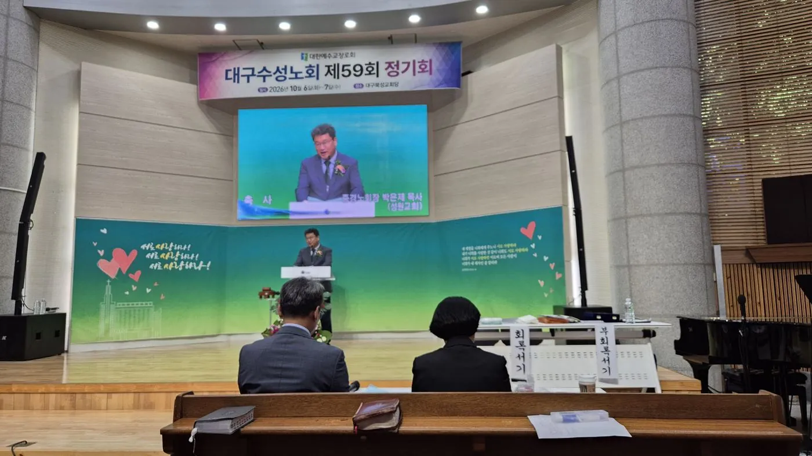

대구수성노회 제59회 정기회 개최… 박민열 목사 안수·강도사 5명 인허
6일 대구북성교회당서 모든 회무 마쳐… 개회예배·성찬식에 이어 목사안수·강도사인허식 거행, 최봉우 목사는 아멘교회 원로목사로 추대, 7일엔 시찰별 체육대회
대한예수교장로회 대구수성노회(노회장 이정근 목사)가 6일 오전 9시 30분 대구 수성구 청수로 대구북성교회당에서 제59회 정기회를 열고 모든 회무를 마쳤다. 이날 노회는 개회예배와 성찬식으로 문을 열었고, 오후에는 목사안수·강도사인허식을 거행해 새 일꾼 여섯 명을 교회와 노회 앞에 세웠다. 이번 정기회에서는 아멘교회 최봉우 목사가 원로목사로 추대되는 기쁨도 더해졌다. 안건 자료에는 강도사인허와 시무사면, 원로목사 허락, 조직교회 세우기 지원 등 10건의 청원이 올랐다.

‘서로 사랑하라’ 아래 모인 노회원들
이번 정기회 강단에는 “서로 사랑하라”는 요한복음 13장 34~35절 말씀이 걸렸다. 노회는 6일 오전 9시 30분 노회장 이정근 목사(드림교회)의 사회로 개회예배를 드렸다. 부노회장 권영식 장로(대구복성교회)가 기도했고, 서기 박용현 목사(황금우리교회)가 야고보서 3장 7~12절을 봉독했다. 이어 노회장 이정근 목사가 설교했으며, 증경노회장 박진국 목사가 축도로 예배를 마무리했다.
개회예배에 이어 열린 성찬식은 문대원 목사가 집례했다. 문 목사는 요한복음 6장 47~51절을 본문으로 ‘그리스도와의 연합’이라는 제목의 설교를 전했다. 이어 분병위원과 분잔위원이 순서를 맡아 성찬이 진행됐다.

제59회기 임원진
제59회기 임원은 노회장 이정근 목사를 중심으로 부노회장 진두홍 목사(푸른교회)·권영식 장로, 서기 박용현 목사, 부서기 김일수 목사(황금교회), 회록서기 서경원 목사(만촌중앙교회), 부회록서기 이지훈 목사(범어교회), 회계 류정탁 장로(범어교회), 부회계 이우철 장로(황금교회)로 구성돼 있다.

최봉우 목사, 아멘교회 원로목사로 추대
이번 정기회에서 눈길을 끈 대목은 아멘교회 최봉우 목사의 원로목사 추대였다. 최 목사는 노회 목사회원 명단에 수성구 달구벌대로 496길에 자리한 아멘교회의 위임목사로 이름을 올려 온 인물이다. 원로목사로 추대된 최 목사는 이날 단상 마이크 앞에서 환한 미소로 노회원들을 마주했다.

안건 자료에는 최 목사가 청원한 아멘교회 위임목사 시무사면 건과, 아멘교회 대리당회장 박은제 목사가 청원한 최 목사의 원로목사 허락 건이 나란히 올랐다. 대구수성노회 규칙집에는 ‘원로 및 은퇴목사 예우 규정’이 별도 항목으로 수록돼 있어, 목회 현장에서 헌신한 목회자를 예우하는 근거를 두고 있다.
회무에 오른 청원 안건… 강도사인허부터 조직교회 지원까지
안건 자료에 실린 청원은 강도사인허 5건, 강도사고시 허락 2건, 시무사면 1건, 원로목사 허락 1건, 조직교회 세우기 지원 1건 등 모두 10건이다.
| 안건 | 건수 | 내용 |
|---|---|---|
| 강도사인허 청원 | 5건 | 대구동신교회(당회장 문대원 목사) 배승순·권필진, 대현교회(당회장 이대범 목사) 강요한, 대구북성교회(당회장 라아론 목사) 최유정, 성덕교회(당회장 윤용돈 목사) 주일도 |
| 강도사고시 허락 청원 | 2건 | 큰숲맑은샘교회 김대현 목사가 청원한 목사후보생 김종현·김병준 |
| 시무사면 청원 | 1건 | 최봉우 목사가 청원한 아멘교회 위임목사 시무사면 |
| 원로목사 허락 청원 | 1건 | 아멘교회 대리당회장 박은제 목사가 청원한 최봉우 목사의 원로목사 허락 |
| 조직교회 세우기 지원 청원 | 1건 | 노회 임원회 청원 |
미조직교회가 조직교회로 세워지면 3년간 3,000만 원 지원
이 가운데 조직교회 세우기 지원 청원은 노회 임원회가 올린 안건이다. 미조직교회가 조직교회로 세워지면 3년간 3,000만 원을 지원하는 내용으로, 노회가 재정으로 조직교회 세우기를 뒷받침하겠다는 안건이다.
오후 2시 목사안수·강도사인허식… 여섯 새 일꾼 세워
오후 2시에는 목사안수·강도사인허 예식이 이어졌다. 사회는 노회장 이정근 목사가 맡았다. 증경노회장 한성근 목사가 기도하고, 서기 박용현 목사가 고린도후서 4장 7절을 봉독했다. 증경노회장 김종균 목사는 고린도후서 4장 7절을 본문으로 ‘이 보배를 질그릇에 가졌으니’라는 제목의 설교를 전했다.
| 구분 | 성명 | 소속 교회 |
|---|---|---|
| 목사안수 | 박민열 | 범어교회 |
| 강도사인허 | 권필진 | 대구동신교회 |
| 주일도 | 성덕교회 | |
| 배승순 | 대구동신교회 | |
| 강요한 | 대현교회 | |
| 최유정 | 대구북성교회 |
강도사 인허: 서약과 기도, 공포
먼저 강도사인허가 진행됐다. 이정근 노회장은 인허 대상자 다섯 명을 일으켜 세워 강도사 서약을 받았다. 대상자들은 오른손을 들고 서약했고, 이어 인허기도와 인허 공포가 이어졌다. 이어 인허증이 수여됐다.


목사안수: 서약에서 가운 착용까지
다음으로 박민열 목사 후보에 대한 안수가 거행됐다. 목사서약에 이어 안수기도가 드려졌고, 안수위원인 증경노회장들과 시찰장, 부목 청빙교회 당회장이 안수했다. 이어 부목 청빙교회 당회장이 새 목사에게 가운을 입혀 주었고, 노회장이 목사 공포와 함께 목사안수증을 수여했다.


이 보배를 질그릇에 가졌으니 이는 심히 큰 능력이 하나님께 있고 우리에게서 난 것이 아니라 — 고린도후서 4장 7절, 목사안수·강도사인허 예식 설교 본문

권면과 축사, 그리고 축도
예식의 후반부에서는 증경노회장 곽양구 목사가 새 일꾼들에게 권면했다. 이어 증경노회장 박은제 목사(성원교회)가 축사를 전했다. 참석자들은 찬송 461장을 함께 부른 뒤, 증경노회장 이희만 목사의 축도로 예식을 마쳤다.

7일은 시찰별 체육대회
노회는 6일 정기회의 모든 회무를 마쳤다. 이어 7일에는 대구동신교회 체육관에서 시찰별 체육대회가 진행된다. 동시찰·중시찰·남시찰이 한자리에 모여 친교를 나눌 예정이다.